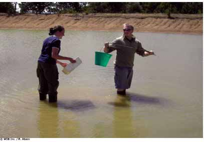
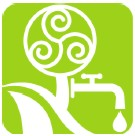

|
Explorando el Agua |
<<
Volver |

|  |
Finalidad 1 Scouts trabajando a favor de un mundo en donde las personas y sistemas naturales tienen agua y aire limpios. Objetivos educativos: Explorar las fuentes de agua limpia y aire limpio en el ambiente local. Identificar amenazas al agua y aire limpios en el ambiente local y global, y estar listos para sugerir soluciones. Edad: Tropa Resumen: Una actividad práctica para explorar la localidad y descubrir dónde se encuentra el agua, para qué se usa y por qué es necesaria. |
| Objetivo: Crear conciencia sobre el
agua en nuestro entorno y la relación entre el agua y la vida humana. Materiales y equipo: Mapa, papel, lápices, cámara (opcional) Preparación: Encuentre una ruta posible alrededor de la localidad. Duración: De una a dos horas Lugar: Localidad Antecedentes: El agua es vital y en muchas partes del mundo podemos encontrarla a nuestro alrededor en una variedad de lugares. En algunas partes del mundo el agua limpia y potable no está disponible gratuitamente. Esta actividad motiva a explorar nuestro ambiente local y descubrir nuestra agua, en dónde está, para qué se necesita y cómo se ve. Una vez que comprendemos el agua y por qué es importante para nosotros, podemos empezar a aprender acerca del agua en un contexto global. |
|
| Guía paso a
paso de la actividad 1. Divida a los Scouts en grupos pequeños y entregue a cada grupo un mapa, papel, lápiz y una cámara (opcional). Puede marcar una ruta en el mapa, puede darles coordenadas a seguir, o ellos podrían decidir su propia ruta dentro de un área marcada. 2. Antes que los grupos salgan, discutan brevemente sobre dónde creen ellos que podrían encontrar agua. Por ejemplo: riachuelos o ríos, baños públicos, charcos, fuentes, etc. 3. Los grupos recorren la ruta en busca de agua. Cuando encuentren agua deberían responder las siguientes preguntas: ¿Dónde está? ¿Para qué se usa? ¿Cuánta agua se encuentra allí? ¿Se encuentra allí todos los días? ¿De que color es? ¿Tiene algún olor, es transparente? ¿Pueden beberla los humanos? ¿Pueden beberla los animales? Si tienen una cámara pueden tomar una fotografía del agua. |
|
| Evaluación 1. Una vez que todos los grupos han regresado, pida a cada grupo que presente lo que encontró y discutan sus hallazgos. Utilice las siguientes preguntas para facilitar la discusión: ¿Se sorprendieron de la cantidad de agua que encontraron? ¿Dónde se representa el agua que encontraron dentro del ciclo del agua? ¿Cómo nos ayuda el agua? ¿Cómo ayuda el agua a las plantas y animales? ¿Alguien mencionó el agua del aire como vapor de agua? ¿Alguien mencionó el agua en el suelo y el agua subterránea? 2. Si tomaron fotografías, elaboren una exhibición del agua en su vecindario. 3. ¿Los grupos identificaron agua oculta dentro de los edificios? Pídales que piensen para qué usamos el agua en nuestros hogares y cómo esa agua llega allí. ¿Qué sucede con esa agua antes de que entre a nuestras casas? ¿A dónde va al salir de nuestras casas y qué le sucede? Actividades avanzadas 1. Visite una planta potabilizadora de agua en su localidad y aprenda de dónde proviene el agua de su hogar, cómo se limpia y a dónde va luego de que la haya usado. 2. Construya una maqueta o elabore un póster mostrando el ciclo del agua. 3. Si encuentra algún problema de contaminación de agua en su localidad, investíguelo en detalle. Descubra qué causa la contaminación y tome alguna acción para resolverlo. 4. Busque maneras en que podemos ser más eficientes con el uso del agua en nuestra vida diaria. © World
Scout Bureau Rue du Pré-Jérôme 5 PO Box 91 1211 Geneva 4 Plainpalais Switzerland Tel.: (+ 41 22) 705 10 10 Fax: (+ 41 22) 705 10 20 worldbureau@scout.org scout.org Reproduction is authorized to National Scout | |